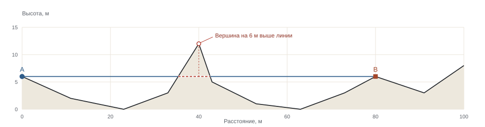

ГЕОМЕТРИЯ ВИДИМОСТИ
Почему вершина скрывает цель
Постановка задачи, геометрический критерий, контрпример для равномерных отсчётов и воспроизводимый расчёт.
Исходник NumPyДве точки на профиле, один гребень между ними. Разбираем точную проверку линии визирования и показываем, как равномерная выборка может пропустить препятствие.

ГЕОМЕТРИЯ ВИДИМОСТИ
Постановка задачи, геометрический критерий, контрпример для равномерных отсчётов и воспроизводимый расчёт.
Исходник NumPyО ЖУРНАЛЕ
«Тулома» посвящена геометрии пространства. В статьях формулируем модель и её границы, а в лаборатории проверяем, как ответ зависит от исходных данных.